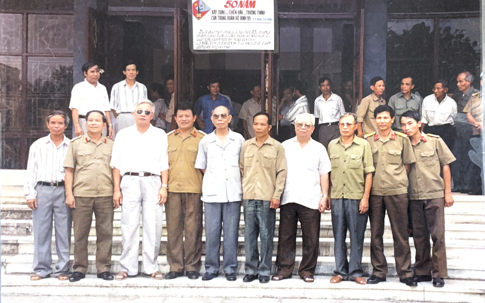

Tiêu đề ảnh
Mô tả chi tiết về bức ảnh này.
DI SẢN NGƯỜI LÍNH TÂY NGUYÊN
Thượng tướng Đặng Vũ Hiệp (1928–2008) là một nhà hoạt động quân sự xuất sắc, người chiến sĩ cách mạng kiên trung đi qua hai cuộc kháng chiến vĩ đại của dân tộc. Hơn mười năm ròng rã gắn bó với chiến trường Tây Nguyên ác liệt trong vai trò Chính ủy Mặt trận Tây Nguyên (Cánh Nam B3), ông đã cùng các tướng lĩnh chỉ huy nhiều chiến dịch lịch sử.
Không chỉ là một vị chỉ huy dũng cảm nơi trận mạc, ông còn là người trân trọng từng giọt máu của người lính trận, đồng cam cộng khổ với chiến sĩ và dành trọn cả cuộc đời hòa bình để chăm lo cho chính sách hậu phương quân đội cũng như nạn nhân chất độc da cam.

Không gian số hóa lưu trữ những huân chương cao quý, hình ảnh chân dung qua các thời kỳ và các bản tài liệu quét chiến trường nguyên bản.
Sáu không gian trưng bày tương tác tái hiện chân thực cuộc đời, sự nghiệp và di sản của ông.
Vui lòng tương tác bằng chuột hoặc chạm để xoay góc nhìn.
Sa bàn 3D mô phỏng chiến dịch Plei Me – Ia Đrăng năm 1965. Trực quan hóa địa hình thung lũng Ia Đrăng dưới chân núi Chư Pông, các điểm đáp trực thăng LZ X-Ray, LZ Albany và các mũi tiến công giữa Quân giải phóng và Sư đoàn Kỵ binh bay số 1 Mỹ.
Tập hợp các bức ảnh lịch sử chân thực về cuộc đời Thượng tướng Đặng Vũ Hiệp qua các giai đoạn, từ thời kháng chiến chống Pháp, chống Mỹ, đến công tác hòa bình và các ảnh phục dựng AI đặc biệt.
Mô tả chi tiết về bức ảnh này.